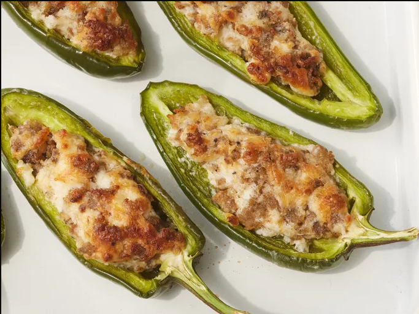

Sausage stuffed jalapenos

Description
These sausage-stuffed jalapeños are a bold mix of spicy,
savory, and creamy> flavors. Fresh jalapeños are filled
with a rich blend of seasoned sausage and cream cheese,
creating an irresistible appetizer.
Baked until golden and bubbly, they develop a crispy exterior
while staying creamy inside. Perfect for parties or game days,
these bites are a hit with spice lovers and cheese fans alike!
Ingredients
- 1 pound ground pork sausage
- 1 (8 ounce) package cream cheese, softened
- 1 cup shredded Parmesan cheese
- 1 pound large fresh jalapeño peppers, halved lengthwise and seeded
- 1 (8 ounce) bottle ranch dressing (Optional)
Steps
- Gather all ingredients.
- Preheat the oven to 425 degrees F (220 degrees C).
- Place sausage in a skillet over medium heat. Cook and stir until evenly brown; drain.
- Mix sausage, cream cheese, and Parmesan cheese together in a large bowl.
- Spoon about 1 tablespoon of sausage mixture into each jalapeño half; arrange stuffed halves in baking dishes.
- Bake in the preheated oven until bubbly and lightly browned, about 20 minutes. Serve with ranch dressing.
Home